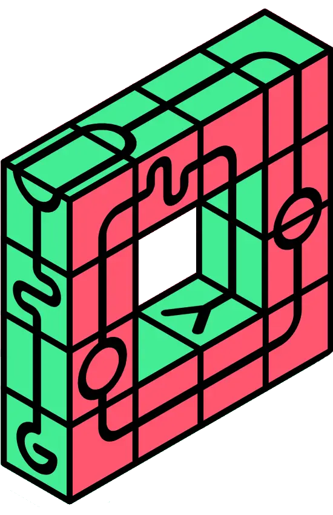

Noções básicas
Os Cubos Interativos são uma experiência criativa em 3D, feita para quem gosta de explorar, montar e se divertir com formas geométricas. Aqui, cada cubo pode ser girado, arrastado e conectado de diferentes maneiras, revelando infinitas combinações possíveis.
Simulação
Trocável
Esses cubos mostram como diferentes peças podem trocar de lugar entre si e ainda assim manter sua forma. Cada face colorida representa uma parte única, mas todas se conectam de maneira organizada. A ideia é mostrar como a troca de posição não altera o equilíbrio do conjunto, mas sim traz novas combinações e possibilidades.
Simulação
Classificável
Esses cubos representam a ideia de classificação dentro de coleções organizadas. Cada bloco encontra sua posição no conjunto, mantendo a consistência da forma e a harmonia das cores. O objetivo é mostrar como a organização pode ser rápida e responsiva, sem comprometer a estabilidade do desempenho.
Simulação
Colidável
O Colidável impede que os cubos se sobreponham e dispara eventos sempre que um cubo entra ou sai de uma área restrita, permitindo criar interações dinâmicas e divertidas.
Simulação
Acessível
Todos os cubos do seu mundo interativo são projetados para serem acessíveis. Cada cubo pode ser selecionado e manipulado pelo teclado ou por leitores de tela, garantindo que todos possam explorar e interagir com seu universo de cubos sem barreiras.
Simulação
Extensível
Cada cubo do seu mundo interativo pode ser expandido e personalizado. Adicione cores, efeitos ou novas interações para tornar seu universo de cubos ainda mais rico e dinâmico. Quanto mais você explorar, mais possibilidades surgem.
Simulação
Interação
Os cubos respondem a diversos tipos de interação: clique, toque e gestos especiais podem ser usados para movimentar, girar ou ativar efeitos. Em breve, todas as interações também estarão totalmente acessíveis pelo teclado, tornando a experiência ainda mais completa.
Simulação
Animação
Os cubos se movem de forma suave e natural, mas você mantém total controle do estilo. Escolha as animações que quiser e personalize cores, efeitos e transições para que cada cubo reflita seu toque único de design.